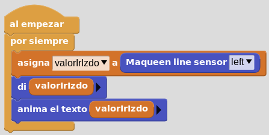

Reto 07
La tarea consiste en visualizar en la pantalla de micro:bit (matriz de 25 leds) el estado del sensor de infrarrojos izquierdo de suelo. El sensor dará valor "True" a blanco (se enciende led azul) y False a negro (se apaga led azul). El valor debe mostrarse en modo animación de texto en la pantalla (25 leds) de micro:bit.
Código:
